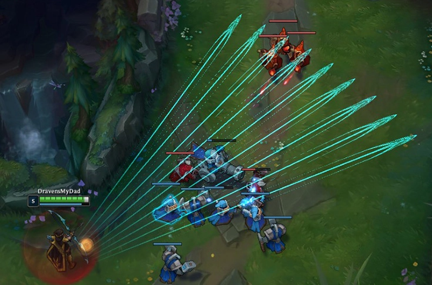
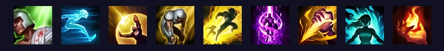

LoL Guide for Beginners
Welcome to our absolute beginner's guide for League of Legends, in this guide we’ll cover some basics knowledge that is very important to know and understand.
Whether you’re thinking about playing the game or just downloaded it, this guide is for you!
Now is a good time to release this guide since a lot of people are downloading League for the first time to play TFT and may eventually want to try it out.
Chapters
- What Is League of Legends
- LoL Champion Basics
- Summoner Spells
- Runes
What is League of Legends?
League of Legends is a multiplayer online battle arena, also known as a MOBA. It’s been one of the most popular games of all time and currently one of the biggest esports.
In a standard game of League, ten players are split into two teams of five and battle it out on a map called Summoner’s Rift.
Each of these players controls a single character, known as a champion.
What is a champion?
All ten players in a League of Legends match controls a single champion.
There are currently over 140 champions with new ones being continuously added over time.
Every champion has special abilities and powers with unique playstyles.
Before a game begins at champ select, each team takes turns selecting champions.
There’s a lot of strategies involved as you work with your team to create teams with champions that work well together (more on this later).
Every game you play can be vastly different since every champion has their own feel and gameplan.
How do you win?
The ultimate goal of LoL is to destroy the other team’s base, but it’s not easy.
Your enemies will do everything they can to kill you and destroy your base.
Each base has a series of turrets and waves of minions that constantly spawn.
If you started a game and tried to run straight to the enemy base, you’d certainly die, not just because the enemy team would be trying to stop you at all costs, but also because you may be too weak and die.
League is sort of like a role-playing game (RPG) that takes place in a very short amount of time.
You begin at level 1 and gradually get stronger throughout the game by gaining experience and earning gold to buy items.
The two teams continually grow in power and collide. Eventually, one team is able to get the upper hand and make a final push for a victory.
Champion Basics
Now that we understand the basics of the map, let’s get back to talking about champions. Champions are the heart and soul of League of Legends as they’re often what players resonate with most.
While Summoner’s Rift stays constant, the different combinations of champions that are chosen by the ten players in game can create vastly different rhythms and feels.
Right now there are currently over 150 champions, each of them representing a different playstyle and experience.
Some are simple and easy to play while others may take a hundred games to master. Whether you like dealing damage from afar, brawling at close quarters, or helping your team with utility, there’s a champion for you.
In the next few sections, we’ll discuss different aspects of champions, such as their abilities, stats, and scaling.
Auto-attacks and Abilities
Every champion has auto-attacks and abilities at their disposal. Auto-attacks, also known as “basic attacks” occur when a player right clicks on a target. Doing so will cause a champion to continually attack a target until it dies.
Abilities are cast using Q, W, E, and R. Every champion has abilities that are unique to them for each of these buttons. Here’s Ashe’s W, Volley, in action below:

All champions also have access to two abilities, using D and F, called Summoner Spells. These are up to a player’s personal preference, we’ll discuss these later on.
Lastly, champions can also cast abilities from items such as Redemption and Tiamat, using the number keys, 1-7.
Champion Stats
A major aspect that sets champions apart is the distribution of their stats. Stats represent a champion’s make up as far as how hard they are to kill, how much damage they do, and how fast they move or attack.
From left to right: attack damage, ability power, armor, magic resist, attack speed, ability haste, critical strike chance, movement speed.
For the purpose’s of this beginner guide, we won’t be getting too technical about stats. Here are the basics:
Health (indicated by a green bar)
- Health represents the amount of damage you can take before dying and being sent to your fountain.
Ability Resources: Mana, Energy, and others
- Abilities cost resources in order to cast them, most champions use mana, energy, or fury.
- The majority of champions, such as Lux and Vel’Koz, use mana.
- Mana is indicated by a blue bar below the health bar and regenerates over time.
- Champions such as Akali and Kennen use energy.
- Energy is indicated by a yellow bar and also regenerates over time but at a much faster rate. These champions often have ways to get energy back as well, such as by auto-attacking.
- The tradeoff is that unlike mana, you cannot increase the amount of energy you have through buying items.
- Other champions use other sources, such as their health, fury, rage, or courage.
- Using health is straightforward, your champion basically takes damage in order to cast their spell.
- Fury, rage, and courage, are dependent on their champions. Be sure to check them out for more details.
Attack Damage (AD)
- Attack damage, also known as physical damage, represents the damage dealt by basic auto-attacks.
- Depending on a champion, AD can also empower abilities.
- Numbers from abilities and items that refer to attack damage are displayed as orange.
Ability Power (AP)
- Ability power primarily makes your abilities (QWER) more powerful, however, AP can also strengthen some items and runes.
- Numbers from abilities and items that refer to ability power are displayed as green.
Armor
- Armor is a defensive stat that mitigates physical damage. Building it will help you survive against champions with a lot of attack damage.
Magic Resist (MR)
- You probably guessed it, but magic resist is the counterpart to armor that mitigates damage from ability power.
Attack Speed (AS)
- Attack speed represents how fast your champion auto-attacks. In general, this is a good combination with attack damage if you’re looking to increase your physical damage output.
Ability Haste
- Abilities have “cooldowns” representing how long it will be before you can cast it again. Items that give you ability haste allow you to cast abilities more often.
Critical Strike Chance
- This stat represents your chance of landing a critical strike – critical strikes cause your auto-attacks to deal double its damage.
- For example, if you have 50% crit chance, your attacks will likely crit 50% of the time. If you have 100% crit chance, they will crit every time.
Movement Speed (MS)
- Movement speed represents how fast your champion moves around the map. This can be increased with abilities and items such as boots.
Summoner Spells
Beyond their QWER abilities, every summoner also must choose two summoner spells for their champion. Summoner spells act as two additional abilities with their own purposes and cooldowns.

They offer flexibility in helping you adapt at champ select and allow you to play toward your preferred playstyle. When you first start playing, you’ll gradually unlock them over time (check out the section at the bottom for more info). In this section, we’ll be going over what each one does and why you’d want to take it.
Heal (240 second cooldown)
- Heal instantly replenishes some of your health (based on your level) and increases your movement speed by 1%.
- It also heals one other ally. You can choose which one it targets by hovering them when you cast Heal. If you don’t specifically with your cursor it will automatically heal the ally closet to dying.
- This is most commonly seen at a bot lane by the ADC role or sometimes, the Support role. This is because it heals two allies at once, giving it more value there than compared to other roles.
Ghost (180 second cooldown)
- This summoner spell grants a large amount of increased movement speed (based on level) for 10 seconds and allows you to run through units (champions, monsters, minions).
- Ghost makes a great choice for champions that rely on chasing down their opponents or want to stay at a safe distance.
- It’s a lot less flexible than its counterpart, Flash, so you’ll often see it paired with Flash rather than replacing it.
Barrier (180 second cooldown)
- Barrier instantly grants you a shield (based on your level) that is great for mitigating burst damage.
- You’ll often see Barrier for the Mid lane role but it’s also taken by ADCs and Supports.
Exhaust (210 second cooldown)

- Exhaust slows a champion and reduces their damage output by 40% over 2.5 seconds.
- This is primarily used defensively but can be used as a crowd control option for chasing opponents.
Flash (300 second cooldown)
- Flash is by far the most popular summoner spell. It allows you to blink a short distance in any direction.
- This may sound very simple at first but the flexibility Flash offers let’s it be equally viable in offensive and defensive situations.
- You can use it to engage and surprise an enemy, or use it to escape over a wall or out of harm’s way.
Teleport (360 second cooldown)
- This summoner spell allows you to instantly teleport to an allied ward, minion, or tower.
- Be aware that this takes 4-seconds to channel and it can be interrupted by a stun or other forms of crowd control.
Smite (210 second cooldown)
- Smite allows you to instantly cast a high burst damage spell upon a minion, monster, or pet (a minion controlled by a champion’s abilities).
- This is a jungler’s core summoner spell and is required in order to play the role.
- Smiting objectives (see the objectives section) allows you to secure them more reliably to get the last-hit before your foes.
- It also helps clear jungle camps and offers increased damage or a slow based on the jungle item upgrade you purchase.
Cleanse (210 second cooldown)
- This summoner spell is sort of like a get out of jail free card as it removes all disables (except for being airborne from knockouts or being suppressed).
- It allows you to get out of an otherwise tight situation and also increases your tenacity, which means that it makes you temporarily resistant to additional incoming crowd control effects.
Ignite (180 second cooldown)
- Ignite is a spell that lasts over 5 seconds and inflicts burning damage.
- It can often help you secure a kill as an enemy is trying to escape if you’re able to land it in time.
- It also decreases the amount of healing a champion can receive so it’s useful against champions with healing effects.
- This also implies that it counters the Heal spell, just make sure to cast Ignite before the Heal goes off.
Runes
League of Legends is all about discovering the best way for you to play based on your personal preferences. On top of summoner spells, runes provide another way for you to tune your champion to either maximize their strengths or to help keep their weaknesses in check.
In this section, we’ll be covering the overarching themes of each of the five main rune trees and explaining how to equip rune pages.
The five rune trees are Precision, Domination, Sorcery, Resolve, and Inspiration.
Precision
- Focuses on empowering auto-attacks making it ideal for ranged carries like Ashe or a melee fighter like Tryndamere.
- Example: Press the Attack rewards you for continuously attacking the same target by increasing your overall damage output.
Domination
- Improves your ability to instantly burst or kill a target, it’s no surprise that you’ll often see assassins like Katarina or Talon take Domination.
- Example: Predator grants you a huge burst of movement speed to allow you to quickly chase down your prey.
Sorcery
- Sorcery augments your abilities but also provides a good amount of utility. It’s most commonly taken by mages and casters like Karma or Lux.
- Example: Summon Aery improves the punch of your spells and also increases the potency of supportive spells by shielding an ally you cast on.
Resolve
- If you’re looking to bolster your defensive capabilities, this is your rune. Beefy tanks and engagers like Nautilus and Leona love the Resolve tree.
- Example: Aftershock provides a burst of bonus armor and magic resist if you immobilize an enemy.
Inspiration
- Inspiration is all about breaking the rules with wacky powers and capabilities. It can be used by many different champions but is very situational.
- Example: Unsealed Spellbook allows you to switch your summoner spells to other ones, rewarding your ability to adapt and think ahead.